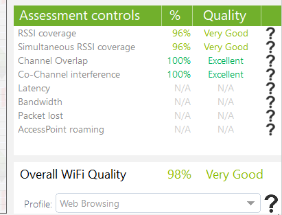

Présentation de ma première année en BUT
Ma première année en BUT Réseaux et Télécommunications a été marquée par une découverte progressive mais intense du monde des réseaux, des systèmes informatiques et du développement. À travers des cours théoriques et surtout des projets pratiques appelés SAÉ (Situations d’Apprentissage et d’Évaluation), j’ai pu développer de nombreuses compétences techniques : configuration de réseaux avec des VLANs, routage, utilisation de logiciels de simulation (comme EVE-NG ou GNS3), programmation en Python, HTML/CSS, ou encore déploiement de services web et embarqués. Cette approche par projet m’a permis de comprendre l’importance du travail en équipe, de la documentation et de l’autonomie. Elle m’a également donné une vision plus claire des domaines dans lesquels je souhaite m’investir par la suite, notamment l’IoT, les systèmes embarqués et la cybersécurité. Cette année a constitué une base solide pour la suite de mon parcours dans les réseaux et télécoms.
SAÉ 1.02 – S’initier aux réseaux informatiques
Résumé : Conception d’une infrastructure réseau simulée avec VLANs, DHCP, routage et EVE-NG.
Administrer les réseaux et l’Internet
- AC11.03 – Configurer les fonctions de base du réseau local (Création de VLANs, configuration des interfaces IP sur les commutateurs et routeurs)
- AC11.04 – Maîtriser les systèmes d’exploitation pour la configuration et l'administration des réseaux (Utilisation d’EVE-NG avec Cisco IOS)
- AC11.06 – Installer un poste client, expliquer la procédure (Ajout et paramétrage de postes sur le réseau virtuel)
Connecter les entreprises et les usagers
- AC12.03 – Déployer des supports de transmission (Connexion des équipements dans la topologie EVE-NG)
🔗 Lien GitHub : Voir le projet sur GitHub
SAÉ 1.04 – Se présenter sur Internet
Résumé : Création d’un mini-site personnel en HTML/CSS avec CV, expériences, liens et mise en page responsive.
Créer des outils et applications informatiques
- AC13.02 – Lire, exécuter, corriger et modifier un programme (Développement HTML/CSS du site personnel)
- AC13.04 – Connaître l’architecture et les technologies d’un site Web (Utilisation des balises, responsive design, hébergement)
🔗 Lien GitHub : Voir le projet sur GitHub
SAÉ 1.05 – Traiter des données
Résumé : Développement d’un outil Python avec interface graphique (PyQt5) pour détecter les fichiers volumineux. Export JSON et script PowerShell de suppression.
Créer des outils et applications informatiques
- AC13.01 – Utiliser un système informatique et ses outils (Utilisation de Python, PyQt5, JSON, PowerShell)
- AC13.02 – Lire, exécuter, corriger et modifier un programme (Débogage et optimisation de code)
- AC13.03 – Traduire un algorithme, dans un langage et pour un environnement donné (Implémentation d’un tri de fichiers lourds)
- AC13.05 – Choisir les mécanismes de gestion de données adaptés (Utilisation de dictionnaires Python, JSON)
- AC13.06 – S’intégrer dans un environnement de développement collaboratif (Utilisation de GitHub en groupe)
🔗 Lien GitHub : Voir le projet sur GitHub
SAÉ 1.03 – Réseaux sans fil (WiFi)
Résumé : Installation d’un réseau WiFi réel, simulation dans Packet Tracer, et heatmap de couverture.
Connecter les entreprises et les usagers
- AC12.01 – Mesurer, analyser et commenter les signaux (Utilisation de logiciels comme Ekahau/NetSpot pour générer une carte de couverture WiFi)
- AC12.03 – Déployer des supports de transmission (Installation physique et paramétrage de points d'accès WiFi)
- AC12.04 – Connecter les systèmes de ToIP (Connexion de téléphones IP en WiFi et test de bande passante)


🔗 Lien GitHub : Voir le projet sur GitHub
SAÉ 2.01 – Construire un réseau
Résumé : Création d’un réseau avec VLANs, inter-VLAN, DHCP, sécurité (ACL, port-security), services FTP & Web sur GNS3.
- AC21.01 – Configurer et dépanner le routage dynamique (Routage OSPF configuré et vérifié dans GNS3)
- AC21.02 – Configurer la QoS et les fonctions de base de sécurité (Port-security, ACL sur routeurs, configuration VLANs sensibles)
- AC21.04 – Déployer des services réseaux avancés (Mise en place d’un serveur FTP, HTTP et DHCP)
Connecter les entreprises et les usagers
- AC22.01 – Déployer et caractériser des systèmes de transmission complexes (Réseau multi-sites simulé)
- AC22.04 – Déployer des réseaux d’accès d’opérateurs (Utilisation de liaisons inter-sites en /30 avec simulation opérateur)
🔗 Lien GitHub : Voir le projet sur GitHub
SAÉ 2.03 – Application web de gestion de notes
Résumé : Site Django CRUD pour gérer les notes, import CSV, export PDF, hébergement Nginx/Linux, collaboration GitHub.
Créer des outils et applications informatiques
- AC13.01 – Utiliser un système informatique et ses outils (Linux, Python, Django, PostgreSQL)
- AC13.02 – Lire, exécuter, corriger et modifier un programme (Correction des vues, modèles, formulaires Django)
- AC13.03 – Traduire un algorithme, dans un langage et pour un environnement donné (Logique d’import CSV, calculs de moyenne)
- AC13.04 – Connaître l’architecture et les technologies d’un site Web (MVC Django, Bootstrap, nginx)
- AC13.05 – Choisir les mécanismes de gestion de données adaptés (Utilisation de modèles Django et base PostgreSQL)
- AC13.06 – S’intégrer dans un environnement propice au développement collaboratif (Projet versionné sur GitHub avec branches)
Administrer les réseaux et l’Internet
- AC11.04 – Maîtriser les systèmes d’exploitation pour administrer les services réseaux (Déploiement sur serveur Linux, configuration de Nginx)
Connecter les entreprises et les usagers
- CE2.01 – Communiquer avec les acteurs du projet, en français et en anglais (Documentation GitHub, présentation finale du projet)
🔗 Lien GitHub : Voir le projet sur GitHub
SAÉ 2.02 – Développement d’une Web Radio (ESP32)
Résumé : Développement d’une Web Radio connectée à base d’ESP32 et VS1053, contrôle via application mobile en MQTT, gestion WiFi embarquée.
Créer des outils et applications informatiques
- AC13.01 – Utiliser un système informatique et ses outils (Arduino IDE, Flashage ESP32)
- AC13.02 – Lire, exécuter, corriger et modifier un programme (Code en C++ pour liaison WiFi/VS1053)
- AC13.03 – Traduire un algorithme, dans un langage et pour un environnement donné (Gestion des commandes MQTT)
- AC13.05 – Choisir les mécanismes de gestion de données adaptés (Utilisation du protocole MQTT et WiFiManager)
- AC13.06 – S’intégrer dans un environnement propice au développement collaboratif (Partage du projet via GitHub en groupe)
Connecter les entreprises et les usagers
- AC12.03 – Déployer des supports de transmission (Connexion sans fil via modules WiFi ESP32)
- AC12.04 – Connecter les systèmes (Connexion ESP ↔ mobile via MQTT)
Administrer les réseaux et l’Internet
- AC11.04 – Maîtriser les systèmes d’exploitation pour administrer des services embarqués
🔗 Lien GitHub : Voir le projet sur GitHub